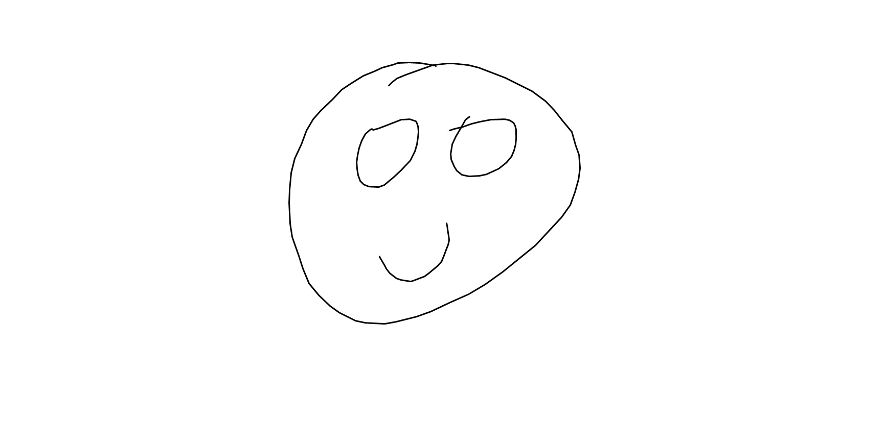

|
Kabir Chandrasekher
|
 |
I am a senior undergraduate in EECS at UC Berkeley working with Professors
Kannan Ramchandran and Jean Walrand. My interests lie mainly in the fields of information theory and coding theory.
I will be pursuing a doctorate in Electrical Engineering at Stanford University in the Fall. I am gratefully supported by the NSF Graduate Research Fellowship
and the Stanford Graduate Fellowship (SGF).
Note: please append berkeley.edu to all email addresses.
|
Research
Conference Publications and Preprints
Kabir Chandrasekher, Kangwook Lee, Peter Kairouz, Ramtin Pedarsani, and Kannan Ramchandran,
International Conference on Communications (ICC), 2017.
Technical Reports
A poster overviewing some past work on offline stochastic scheduling for surgeries can be
found here. This work was presented at the UC Berkeley
EECS Undergraduate Research Symposium, Fall 2015.
Teaching
|